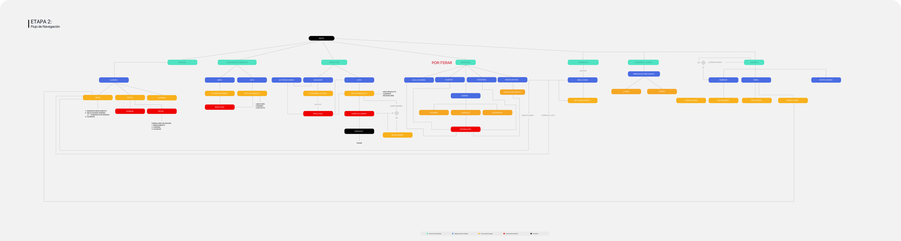
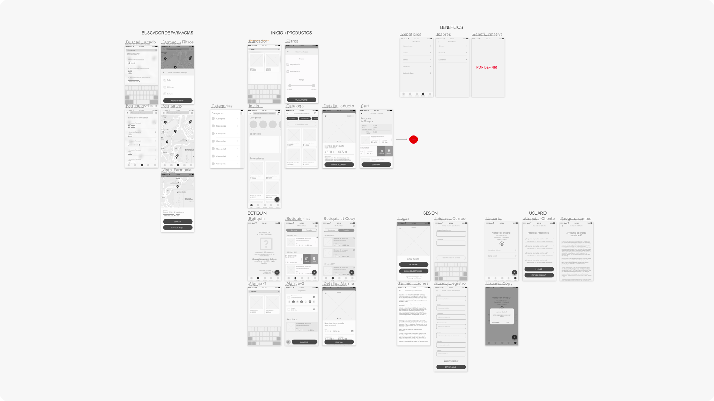
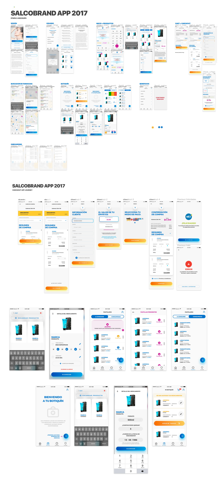
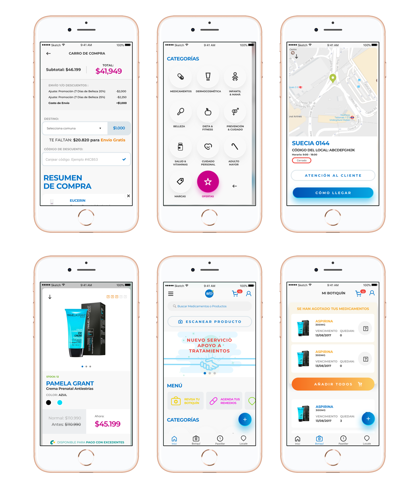

Salcobrand_ App E-Commerce and Health Helper
Lead Designer | UX | UI
Salcobnrand App was one of my favorite projects before. This app is a native mobile made for the E-Commerce Users of the Drugstore Salcobrand for the phone. Also, the chronic people who needs to buy mediciones or put some alerts to take their pills or alerts if there're few pills left at the box, helping users with their medicines at home and diseases.
- User Experience Design
- User Interface Design
- Mobile Apps
Want to know when to take your pills? We'll be your memory!

As every Digital Product and after a lot of research this App was the continue project after finished the Salcobrand.cl site. This time, our target was journeys for users to take pills, buy mecidines left, profucts and search for stores. User Flow interaction was a clue of what's next in that momment.

Weeks of iteration with client, i'd begun to draw some architecture information as Wireframes and Prototypes in order to closed more of the hipothesis at the previous activities for this product, was beautiful to validate them and continue with this amazing project.

I had defined for the previous Salcobrand.cl Website before so, the Graphics was bases those guidelines, making our App looks like this.

This are a few of the views of the app developed for iOS and Android (Native Coding) that soon will be uploaded at its respective stores.